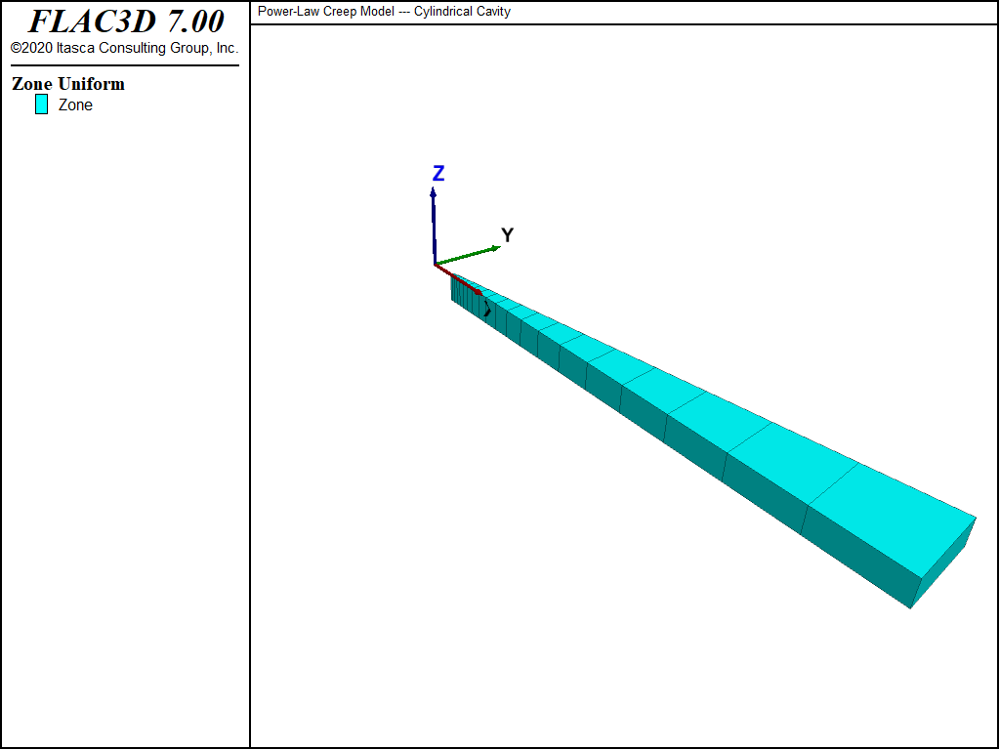
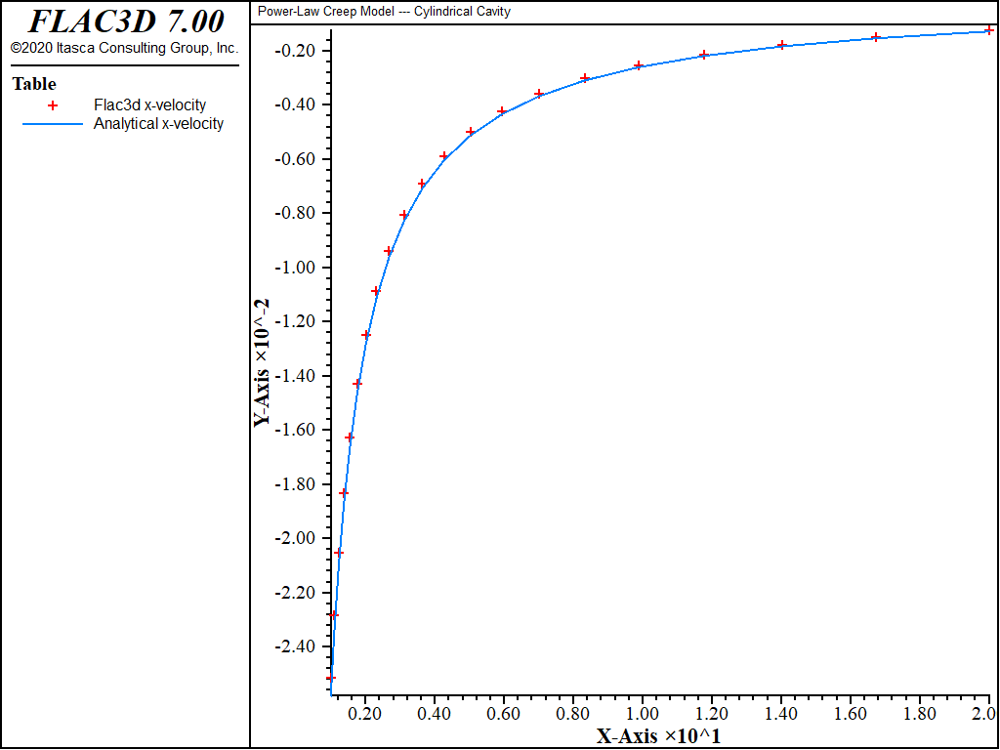
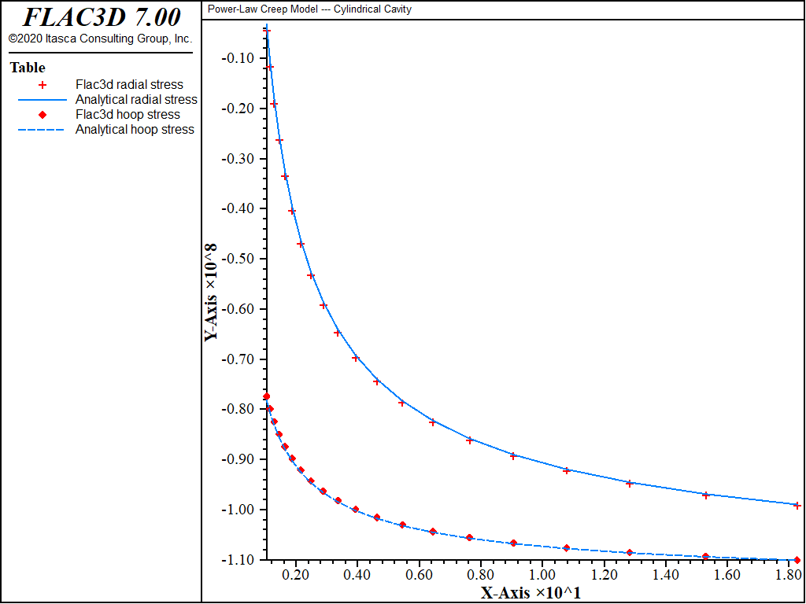
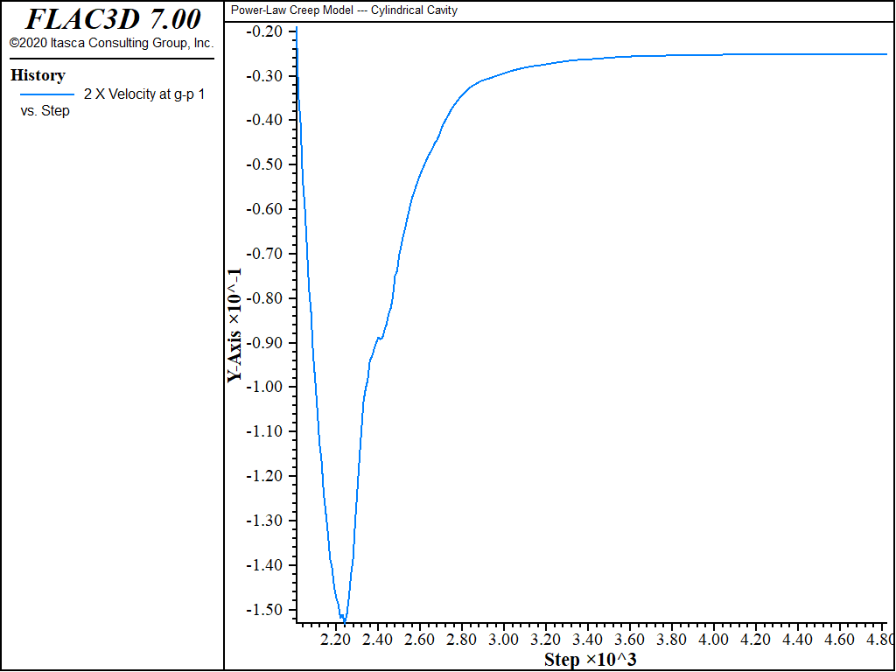
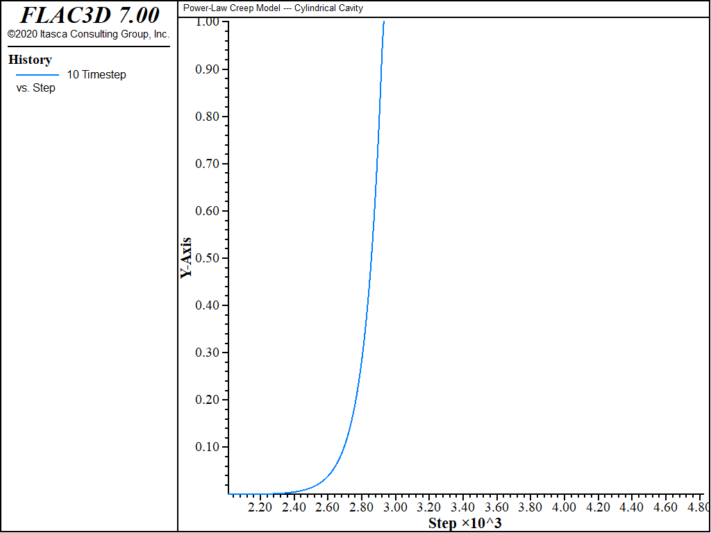

幂律模型：圆柱空腔
注意
要在 FLAC3D 中查看此项目，请使用菜单命令 。 选择“Creep/CylindricalCavityPower”并选择“CylindricalCavityPower.f3dprj”以加载。 该项目的主数据文件见本示例末尾（main data files）。
FLAC3D 中的幂律蠕变模型（power-law creep model）用于求解无限长厚壁圆柱的径向蠕变问题。并与解析解进行了比较。
圆柱外表面承受压力。材料的蠕变行为由单分量幂律定义：
对于该问题，\(A\) = 1 × 10-7 MPa-3 yr-1（或 1 × 10-25 Pa-3 yr-1），且 \(n\) = 3。材料的弹性特性为 \(E\) = 820 MPa，\(\nu\) = 0.3636。
该问题的解析稳态解由 van Sambeek（1986）给出， 此处复述如下：
其中：\(\sigma_r\)、\(\sigma_\theta\) 为径向和切向应力分量；
| \(\sigma_z\) | 为平面外应力分量； |
| \(P_b\) | 为施加的边界应力； |
| \(\dot u_r\) | 为径向位移速率； |
| \(a\), \(b\) | 分别为圆柱的内半径和外半径；以及 |
| \(r\) | 为计算点处的半径。 |
图 1（Figure 1） 显示了 FLAC3D 网格。利用轴对称性， 只表示 9° 的一个扇形区域。在平面外方向使用单层网格单元。内半径为 \(a\) = 1，外半径为 \(b\) = 20。
网格点在平面外方向和环向固定。在外边界施加了 100 MPa 的压力。
初始应力对应于无孔弹性圆柱的平面应变状态，为
通过将蠕变设为关闭，使圆柱达到弹性平衡。
然后，将蠕变时步设为其初始值（由 模型蠕变最小时步命令（model creep timestep minimum） 定义），
并让其自动增大，直到达到稳态。
最大允许时步（由 设置蠕变最大时步（model creep timestep maximum） 定义）由 求解蠕变问题（Solving Creep Problems）中所述的方法确定。


图 1：圆柱空腔试验的 FLAC3D 网格。
该问题的数据文件（data file）见本节末尾。解析解以 FISH 函数 幂律圆柱（powcyl） 的形式包含在项目中。
本示例的结果汇总于 图 2（Figure 2） 至 图 5（Figure 5）。图 2（Figure 2） 比较了 稳态条件下径向速度的解析解与 FLAC3D 结果。 图 3（Figure 3） 给出了径向应力和环向应力的比较。 图 4（Figure 4） 给出了空腔处径向速度的历史。 初始阶段出现一些波动，但很快达到稳态解。初始的高 值是意料之中的，因为蠕变前的状态远离平衡。最终值与解析解相差在 2.5% 以内。图 5（Figure 5） 显示了 时步从初始值 10-4 演化到最大值 1 的过程。


图 2：稳态时径向速度的比较——FLAC3D 与解析解。


图 3：稳态时径向应力和环向应力的比较——FLAC3D 径向应力与解析径向应力、FLAC3D 环向应力与解析环向应力。


图 4：圆柱空腔处径向速度的历史。


图 5：圆柱空腔试验的时步历史。
数据文件
;------------------------------------------------------------
; 圆柱形空腔——幂律模型
;-------------------------------------------------------------------
model new
model large-strain off
fish automatic-create off
model title "Power-Law Creep Model --- Cylindrical Cavity"
model configure creep
;
zone create brick point 0 1 0 0 point 1 20 0 0 ...
point 3 0.98769 0.15643 0 point 6 19.754 3.129 0 ...
point 2 1 0 -1 point 4 20 0 -1 ...
point 5 0.98769 0.15643 -1 point 7 19.754 3.129 -1 ...
size 20 1 1 ratio 1.2 1 1
zone face skin
zone cmodel power
; 属性和应力采用帕斯卡单位（非 MPa）
zone property bulk=1e9 shear=3e8 constant-1=1e-25 exponent-1=3
;
zone gridpoint fix velocity-y range position-y 0
zone gridpoint fix velocity-z range position-y 0
zone face apply velocity-normal 0 range group 'North'
zone face apply velocity-dip 0 range group 'North'
zone face apply stress-normal -100e6 range group 'East'
zone initialize stress xx -100e6 yy -100e6 zz -100e6
;
model step 2000
model save 'cyl_1'
;
model history mechanical unbalanced-maximum
zone history velocity-x gridpointid 1
zone history velocity-x gridpointid 81
zone history displacement-x gridpointid 1
zone history displacement-x gridpointid 81
zone history stress-xx gridpointid 1
zone history stress-yy gridpointid 1
zone history stress-zz gridpointid 1
model history creep time-total
model history timestep
;
zone gridpoint initialize velocity (0,0,0)
model creep active on
model creep timestep starting 1.0e-4
model creep timestep minimum 1.0e-4
model creep timestep maximum 1.0
model solve time-total 2000
model save 'cyl_2'
; 与解析解比较……
program call 'solution' suppress
table '1' label 'Flac3d x-velocity'
table '11' label 'Analytical x-velocity'
table '2' label 'Flac3d radial stress'
table '12' label 'Analytical radial stress'
table '3' label 'Flac3d hoop stress'
table '13' label 'Analytical hoop stress'
table '4' label 'Flac3d out-of-plane stress'
table '14' label 'Analytical out-of-plane stress'
model save 'cylindrical-cavity-power'
| 这些内容对您有帮助吗？… 版权与免责声明 |
FLAC3D © 2019, Itasca | 原文更新于 2020 年 10 月 8 日 |